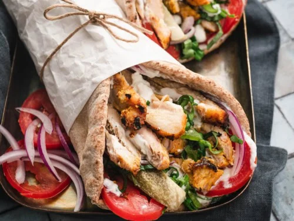

Shawarma

Shawarma is a popular Middle Eastern street food dish made with marinated, spiced meat (chicken, beef, or lamb)
that’s grilled or roasted, then wrapped in flatbread with fresh veggies and creamy sauces.
- 500 g chicken thighs or breasts, thinly sliced
- 3 tbsp plain yogurt
- 2 tbsp olive oil
- 1 tsp paprika
- 1 tsp ground cumin
- 1/2 tsp turmeric
- 1/2 tsp cinnamon
- 2 garlic cloves, minced
- Salt and pepper to taste
- Pita bread or flatbread
- Lettuce, tomatoes, onions, and pickles for filling
- Garlic sauce or tahini sauce
- Mix yogurt, olive oil, garlic, and spices in a bowl. Add the chicken and marinate for at least 1 hour
(overnight is better).
- Heat a skillet or grill pan and cook the marinated chicken until golden and fully cooked.
- Assemble the shawarma: place chicken strips on flatbread, add lettuce, tomatoes, onions, and pickles, and
drizzle with garlic sauce or tahini.
- Slice the cooked chicken into strips.
- Wrap tightly and serve warm.